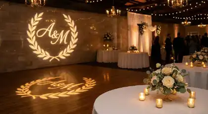
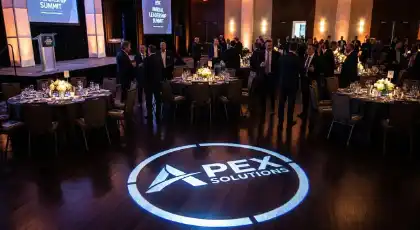
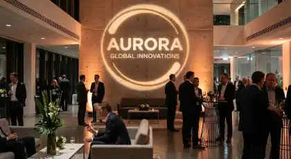
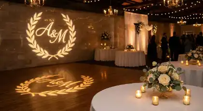
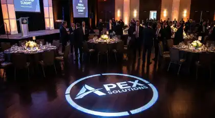
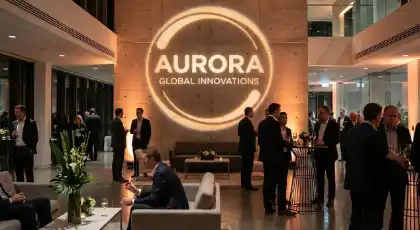

RENTA DE
PROYECTOR DE GOBOS
Proyección profesional de logotipos, monogramas y diseños personalizados para branding corporativo y eventos especiales en CDMX y Estado de México
Especialistas en renta de proyectores de gobos profesionales para proyección de identidad visual corporativa y personalización de eventos. Nuestros equipos de proyección especializada permiten mostrar logotipos empresariales, monogramas de bodas, mensajes promocionales y patrones decorativos personalizados sobre paredes, pisos, techos y fachadas con nitidez fotográfica y dimensiones ajustables según el espacio del evento.
Ofrecemos proyectores LED de 30W hasta HMI de 150W+ con gobos metálicos monocromáticos y gobos de vidrio dicróico a todo color. Cada servicio incluye diseño o adaptación del gobo personalizado, fabricación láser de alta precisión, sistema óptico profesional con zoom ajustable y técnico especializado para instalación y calibración. Proyección de marca profesional con garantía de nitidez durante todo el evento.
Galería de Proyecciones
Descubre cómo nuestros proyectores de gobos han personalizado eventos corporativos y sociales en CDMX

 





Estas instalaciones muestran la versatilidad de nuestros proyectores de gobos profesionales en eventos corporativos, bodas y activaciones de marca en CDMX y Estado de México. Cada proyecto refleja nuestro compromiso con la precisión técnica y el diseño personalizado que caracteriza a RESOIL.
Por Qué la Proyección de Gobos Es la Decisión Correcta para Su Evento
Los proyectores de gobos representan la solución más sofisticada y versátil para integrar identidad visual corporativa o personalización única en eventos profesionales y celebraciones especiales. A diferencia de señalización estática, backdrops impresos o elementos gráficos tradicionales, la proyección de gobos ofrece flexibilidad incomparable para mostrar logotipos, mensajes o diseños decorativos en múltiples superficies simultáneamente, con posibilidad de ajustar tamaño, ubicación y efectos dinámicos según evoluciona el evento. Para empresas que buscan reforzar presencia de marca en lanzamientos de productos, convenciones o activaciones, la proyección de gobos garantiza visibilidad constante del logotipo corporativo integrado naturalmente al ambiente del venue, generando impacto visual profesional sin interrumpir el flujo del evento.
Nuestro servicio de renta de proyectores de gobos en Ciudad de México incluye consultoría especializada de diseño, optimización técnica del gobo para máxima nitidez de proyección, fabricación láser de precisión en metal o vidrio según requerimientos de color, equipos profesionales con sistemas ópticos de enfoque variable y personal técnico certificado para instalación, calibración y soporte durante todo el evento. Cada gobo personalizado es sometido a pruebas exhaustivas de proyección antes de la instalación final, garantizando reproducción fiel de colores corporativos, legibilidad perfecta de textos y definición fotográfica de detalles gráficos. Con más de 10 años especializándonos en soluciones de iluminación corporativa, entendemos que el éxito del branding visual en eventos depende tanto de la calidad óptica del equipo como de la experiencia técnica en su configuración y posicionamiento estratégico.
Aplicaciones Estratégicas: Dónde los Proyectores de Gobos Marcan la Diferencia
Eventos Donde Nuestros Proyectores de Gobos Crean Impacto Visual
Eventos Corporativos
Lanzamientos de productos con proyección de logotipo en múltiples superficies, convenciones empresariales con branding institucional, presentaciones ejecutivas con identidad visual corporativa, stands de exhibición con proyección en pisos y paredes, juntas de accionistas con señalización luminosa profesional.
Bodas Elegantes
Monogramas personalizados en pista de baile, proyección de iniciales de los novios en paredes y techos, diseños decorativos en entrada ceremonial, hashtag del evento proyectado en área de fotos, patrones románticos en backdrop de mesa principal, señalización luminosa para áreas del evento.
Activaciones de Marca
Proyección de logotipos en fachadas de edificios, guerrilla marketing con gobos en espacios públicos, activaciones en plazas comerciales, inauguraciones de tiendas con branding proyectado, eventos promocionales con mensajes personalizados, instalaciones artísticas con marca integrada.
Galas y Premiaciones
Escenarios con logotipo del evento proyectado en backdrop, red carpets con branding corporativo, salones de gala con identidad visual institucional, ceremonias de reconocimiento con señalización luminosa, áreas VIP con proyecciones exclusivas, decoración ambiental con patrones elegantes.
Producciones Audiovisuales
Sets de televisión con gobos decorativos, estudios de fotografía con fondos proyectados personalizados, grabaciones de video con efectos lumínicos, producciones musicales con proyecciones artísticas, livestreaming con elementos gráficos proyectados, contenido para redes sociales con branding integrado.
XV Años y Celebraciones
Monogramas con nombre y edad de la quinceañera, proyección temática según decoración del evento, diseños personalizados en pista de vals, señalización luminosa para mesas y áreas, patrones decorativos en paredes, efectos rotatorios dinámicos para momentos especiales del protocolo.
Paquetes y Especificaciones Técnicas
Soluciones para Cada Necesidad de Proyección
| Paquete | Configuración | Eventos Ideales | Incluye |
|---|---|---|---|
| Básico | 1-2 proyectores LED 30W con gobo estándar personalizado | Bodas íntimas, celebraciones pequeñas, monogramas simples | Gobo metálico, instalación, enfoque |
| Esencial | 2-4 proyectores LED 50W con gobos personalizados | Eventos medianos 100-200 invitados, branding básico | Gobos metálicos, filtros de color, soporte técnico |
| Profesional | 4-6 proyectores LED 80W con gobos rotatorios | Eventos corporativos, activaciones de marca, galas | Gobos vidrio opcional, efectos dinámicos, técnico on-site |
| Premium | 6-10 proyectores alta potencia con gobos vidrio dicróico | Lanzamientos productos, convenciones, branding masivo | Gobos color completo, múltiples proyecciones, diseño incluido |
| Enterprise | 10+ proyectores HMI con diseño escenográfico corporativo | Proyección en fachadas, eventos masivos, instalaciones artísticas | Ingeniería especializada, proyección arquitectónica, respaldos |
Especificaciones Técnicas Universales
- Tipos de proyectores: LED 30W/50W/80W, HMI 150W+ para exteriores
- Tipos de gobos: Metálicos monocromáticos, vidrio dicróico a color
- Tamaños estándar: Formato A (86mm), B (100mm), M (66mm)
- Distancia de proyección: 2-30 metros según potencia del equipo
- Tamaño de imagen: 0.5-10 metros de diámetro ajustable con zoom
- Temperatura de color: 3200K cálida, 5600K neutra, 6500K fría
- Sistema óptico: Lentes asféricas multicapa con zoom 15°-30°
- Efectos disponibles: Rotación 0-100 RPM, zoom motorizado, fade
- Filtros de color: Biblioteca 20+ colores Rosco/Lee intercambiables
- Fabricación gobos: Corte láser precisión 0.1mm, grabado CNC
- Vida útil LED: 20,000+ horas operación continua
- Certificaciones: CE, RoHS, FCC compliance, NOM-001-SEDE
Solicita tu Cotización de Proyección de Gobos
Completa el formulario con los detalles de tu proyecto y recibe una propuesta personalizada
Preguntas Frecuentes sobre Proyección de Gobos
Respuestas a las dudas más comunes sobre proyectores de gobos personalizados
Un proyector de gobos es un equipo de iluminación especializado que utiliza una plantilla (gobo) grabada en metal o vidrio para proyectar imágenes, logotipos, patrones o textos sobre superficies. Funciona mediante una lámpara LED o halógena de alta intensidad que pasa luz a través del gobo, un sistema óptico de lentes enfoca y amplifica la imagen proyectada. Los proyectores profesionales permiten ajustar el tamaño de proyección (zoom), enfocar la nitidez, rotar la imagen y controlar la intensidad lumínica. Son ideales para proyectar logotipos corporativos en paredes, pisos o techos durante eventos empresariales, monogramas en bodas, mensajes promocionales y diseños decorativos personalizados.
El tiempo de fabricación varía según el tipo y complejidad del gobo: Gobos metálicos estándar monocromáticos requieren 3-5 días hábiles de producción. Gobos de vidrio dicróico a color completo necesitan 7-10 días hábiles. Diseños complejos con múltiples colores o degradados pueden requerir hasta 15 días. Para eventos con fechas cercanas, contamos con biblioteca de gobos genéricos (patrones, texturas, formas) disponibles inmediatamente. Recomendamos solicitar gobos personalizados con mínimo 2 semanas de anticipación. El proceso incluye: aprobación de diseño digital, fabricación láser de alta precisión, control de calidad y pruebas de proyección antes de la entrega.
Sí, mediante gobos de vidrio dicróico de color completo. Estos gobos premium permiten reproducir logotipos corporativos con todos sus colores institucionales, degradados y detalles fotográficos. El proceso utiliza tecnología de deposición de capas de color sobre vidrio templado resistente al calor. Son ideales para branding corporativo de alta fidelidad en lanzamientos de productos, convenciones, stands de exhibición y eventos ejecutivos. Para presupuestos más ajustados, ofrecemos gobos metálicos monocromáticos que pueden proyectarse con filtros de color intercambiables, logrando versiones de un solo color del logotipo (azul, rojo, verde, etc.) con excelente definición y menor costo.
Las capacidades de proyección dependen de la potencia del equipo y las lentes utilizadas: Proyectores LED 30W: distancia 2-6 metros, tamaño de proyección 0.5-2 metros de diámetro. Proyectores LED 50W: distancia 4-10 metros, tamaño 1-3 metros. Proyectores LED 80W: distancia 6-15 metros, tamaño 2-5 metros. Proyectores HMI 150W+: distancia 10-30+ metros, tamaño 3-10 metros (escenarios grandes). Los sistemas profesionales incluyen lentes zoom intercambiables que permiten ajustar el tamaño de proyección sin mover el equipo. La nitidez óptima se logra en superficies planas, lisas y de color claro. Superficies oscuras o texturizadas requieren mayor potencia lumínica para visibilidad adecuada.
Absolutamente. Los gobos personalizados son inversiones reutilizables que pertenecen al cliente después del evento. Los gobos metálicos tienen vida útil de 500+ horas de proyección continua y pueden usarse en múltiples eventos durante años. Los gobos de vidrio dicróico son aún más duraderos, resistiendo 1,000+ horas sin degradación de color. Almacenamos los gobos de nuestros clientes corporativos frecuentes sin costo adicional, facilitando su uso en eventos recurrentes (convenciones anuales, presentaciones trimestrales). Para empresas con múltiples eventos al año, recomendamos adquirir el gobo personalizado y rentar únicamente el proyector en cada ocasión, optimizando costos a largo plazo mientras mantienen consistencia visual en su branding.
Sí, la proyección exterior es posible pero requiere consideraciones especiales: La proyección nocturna ofrece mejores resultados, ya que la luz ambiental reduce visibilidad. Utilizamos proyectores de alta potencia (80W-150W+) para exteriores, compensando la luz residual. Las proyecciones funcionan excelentemente en fachadas de edificios, muros perimetrales, estructuras arquitectónicas y pisos de terrazas. Para eventos diurnos exteriores, recomendamos áreas sombreadas o proyección en horarios de menor luz solar (atardecer). Los equipos utilizados en exteriores cuentan con carcasas resistentes a la intemperie y protección IP54+ contra polvo y humedad. Aplicaciones populares incluyen proyección de logotipos en inauguraciones, activaciones de marca en plazas públicas y señalización luminosa en eventos al aire libre.
Ambos tipos tienen aplicaciones específicas según presupuesto y requerimientos visuales: GOBOS METÁLICOS: Fabricados en acero inoxidable mediante corte láser de alta precisión. Solo permiten proyección monocromática (un color). Más económicos y rápidos de producir (3-5 días). Ideales para logotipos simples, textos, monogramas y patrones. Temperatura máxima de operación 300°C. Vida útil 500+ horas. GOBOS DE VIDRIO DICRÓICO: Fabricados en vidrio templado con capas de color depositadas. Permiten proyección a todo color con degradados fotográficos. Mayor costo pero calidad visual superior. Tiempo de producción 7-10 días. Ideales para branding corporativo de alta fidelidad. Temperatura máxima 600°C. Vida útil 1,000+ horas. Resistencia superior al calor de lámparas HMI de alta potencia.
Ofrecemos ambas opciones según las necesidades del cliente: DISEÑO INCLUIDO: Nuestro equipo de diseñadores especializados puede crear el diseño del gobo partiendo de referencias, bocetos o indicaciones generales. Incluye hasta 3 rondas de revisiones sin costo adicional. Ideal para monogramas de bodas, diseños decorativos personalizados o adaptaciones de logos existentes. ARCHIVOS DEL CLIENTE: Si ya cuentas con logotipo o diseño corporativo, podemos trabajar directamente con tus archivos vectoriales (AI, EPS, PDF, SVG de alta resolución). Realizamos optimización técnica del diseño para garantizar proyección nítida: ajuste de grosores de línea, eliminación de detalles demasiado finos, adaptación a formato circular del gobo. Proporcionamos vista previa digital y simulación de proyección antes de aprobar fabricación final. El servicio de diseño y optimización está incluido en todos nuestros paquetes.
Proyecta Tu Marca con Profesionalismo en Cada Evento
No permitas que tu identidad corporativa o celebración especial carezca del impacto visual que merece. Los proyectores de gobos profesionales elevan cualquier evento al integrar branding sofisticado o personalización única de manera no invasiva y altamente memorable. Desde lanzamientos de productos con logotipos proyectados en múltiples superficies hasta bodas elegantes con monogramas románticos, la proyección de gobos transforma espacios ordinarios en ambientes marcados con identidad visual profesional que tus invitados o clientes recordarán permanentemente.
Con más de una década especializándonos en proyección de gobos para eventos corporativos y sociales en Ciudad de México, garantizamos reproducción fiel de logotipos, fabricación láser de precisión, sistemas ópticos profesionales y soporte técnico certificado durante toda tu celebración. Cada proyecto incluye consultoría de diseño personalizada, optimización de archivos gráficos para proyección óptima y garantía total de nitidez. No arriesgues la representación visual de tu marca con proveedores inexpertos.